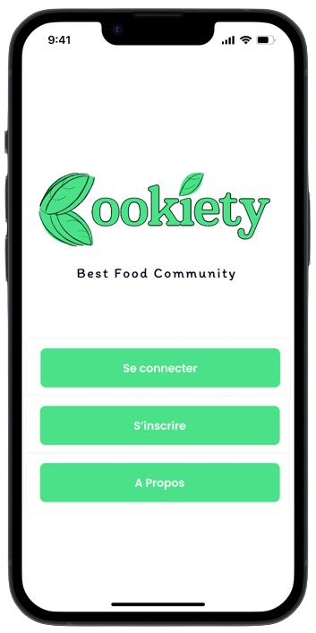
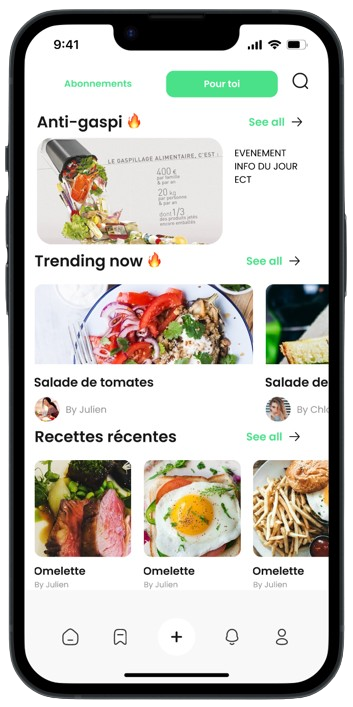
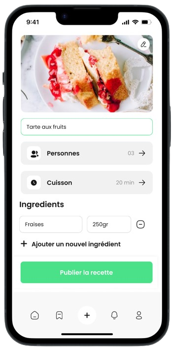
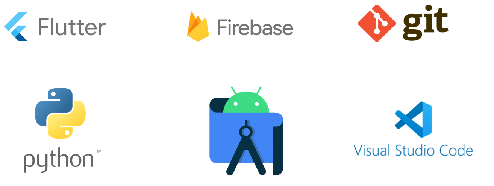

Cookiety, une expérience
délicieusement unique !
délicieusement unique !
Imaginez une application qui transforme la cuisine en une expérience de jeu
interactif.
C’est ce que propose Cookiety, une application mobile qui nous motive à cuisiner grâce à des
quêtes culinaires comme des défis uniques, ou des tournois de cuisine virtuels basés sur les
performances des utilisateurs. Encouragez ainsi la compétition amicale afin de gagner des
"étoiles de chef" qui font monter les utilisateurs en grade et débloquer des fonctionnalités
spéciales !
Cette plateforme collaborative, servira aussi de point de rencontre entre utilisateurs qui
peuvent s’abonner et s’échanger directement entre eux.
Elle rassemble une communauté culinaire axée sur le partage de recettes. Qu’ils soient
cuisiniers amateurs, passionnés de cuisine ou professionnels, ces derniers peuvent s’inspirer,
publier leurs recettes créatives et apprendre. Mais surtout, chacun d’entre eux peut être acteur
et participer activement à des challenges. Cette approche ludique et interactive offre une
expérience de cuisine innovante, captivante et divertissante.
L’abonnement à cette application offre des fonctionnalités avancées telles que
la participation à des sessions vidéos de cuisine, la possibilité de visionner l'historique des
messages, la publication illimité de recettes, ainsi que la multiplication des "étoiles de chef"
pour débloquer des avantages.




🍲 Histoire de Cookiety
De nos jours, la cuisine est souvent reléguée au second plan dans la vie
trépidante des étudiants. Avec des horaires chargés, des budgets limités et des options de
restauration rapide omniprésentes, il n'est pas surprenant que la motivation pour cuisiner à la
maison soit en déclin. De plus, l'absence des parents et la liberté accompagnée du rythme
scolaire ont changé les habitudes de consommation des étudiants.
En France, près d’un étudiant sur deux s'est déjà passé d’un petit-déjeuner, d’un déjeuner voire
d’un dîner à cause du manque de motivation de cuisiner. En effet, le 12 septembre 2023
l’association Cop1 a publié son enquête annuelle, 812 étudiants français ont été interrogés.
Parmi eux, 46 % indiquent avoir « supprimé certains repas ». Et cela est dû à un manque
d'inspiration, c’est l’une des raisons pour laquelle ils sont démotivés pour cuisiner.
L’enquête de 2018 menée auprès de 18 875 étudiants par l’Observatoire de la vie étudiante
indique que près de la moitié d’entre eux (48 %) sautent des repas, l’expliquant principalement
par le manque d’envie de cuisiner. (Il y a eu d’autres raisons = manque de temps, budget mais
celle-ci était la plus régulière).
Le but serait de transformer la cuisine pour les étudiants en une expérience ludique et
socialement enrichissante, inversant ainsi la tendance du manque de motivation pour cuisiner.
De là est née l’idée de départ. En tant qu’étudiant et, pour la plupart vivant seuls, les
membres du projet se sont rendus compte que quand
ils rentraient tard le soir après les cours, ils n’avaient plus vraiment de motivation pour
cuisiner. Cela résultait d’un manque d’inspiration ou d’un talent culinaire pour faire des
recettes variées.
Mais surtout, cela résultait de la solitude, car en effet, il n'y a personne derrière un
étudiant vivant seul pour le motiver, lui donner des idées, voire cuisiner avec lui.
Puis les membres de l'équipe avaient aussi remarqué, que les applications culinaires n'étaient
pas autant reconnues que les réseaux sociaux comme Tiktok ou Instagram chez les jeunes. Et, que
la plupart d’entre eux passent par internet directement pour trouver des recettes.
Ainsi l'équipe avait réflechi à comment motiver les jeunes à la création de recettes variées sur
une plateforme de type réseau social tout en renforçant l'interaction et la connexion entre
utilisateurs.
Enfin...
Face aux défis uniques auxquels sont confrontés les étudiants dans leur vie quotidienne, l’application de compétitions culinaires émerge comme une solution novatrice. En transformant la cuisine en un jeu passionnant et participatif, L’équipe de projet a conçu une expérience culinaire qui s'adapte parfaitement au mode de vie trépidant des étudiants. En stimulant la créativité et en encourageant la compétition amicale, l’application crée une plateforme dynamique où les étudiants peuvent non seulement relever des défis culinaires, mais aussi se connecter avec une communauté. Rejoignez Cookiety pour une aventure culinaire unique. Téléchargez maintenant et découvrez une nouvelle façon passionnante de cuisiner, spécialement conçue pour s'adapter à votre vie étudiante. Transformez chaque repas en une expérience inoubliable et partagez le plaisir de la cuisine avec une communauté aussi enthousiaste que vous ! 🌟👩🍳📱Développement
Afin d'aboutir ce projet, l'équipe a eu recours à différents outils tels que Figma,Visual Studio, Firebase et Flutter. Tout d'abord les membres de l'équipe ont crée des prototypes sur Figma afin de visualiser la solution, en prenant en compte le design d'une application mobile, ergonomique. Ensuite, ils ont commencé à développer en langage dart en utilisant Flutter. (Pages, utilisateur, interaction, etc). Pour éditer le code, ils ont utilisé Visual Studio Code. Ils se sont aidé de Firebase pour pouvoir y stocker la base de données de l'application (données de l'utilisateur, comptes).

A propos de l'équipe
Spécialité PEI: Product Engineering & Innovation
- Louis Thomas : louis.thomas@edu.ece.fr
- Gayathrie Sriraj : gayathrie.sriraj@edu.ece.fr
- Vanessa Jasmin : vanessa.jasmin@edu.ece.fr
- Julien Benaroche : julien.benaroche@edu.ece.fr
Spécialité SE: Systèmes Embarqués
- Bastien Thomas : bastien.thomas@edu.ece.fr
- Quentin Gavoille : quentin.gavoille@edu.ece.fr